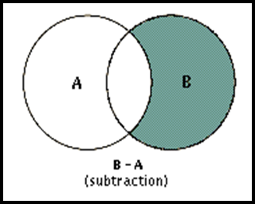
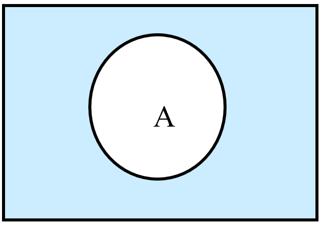
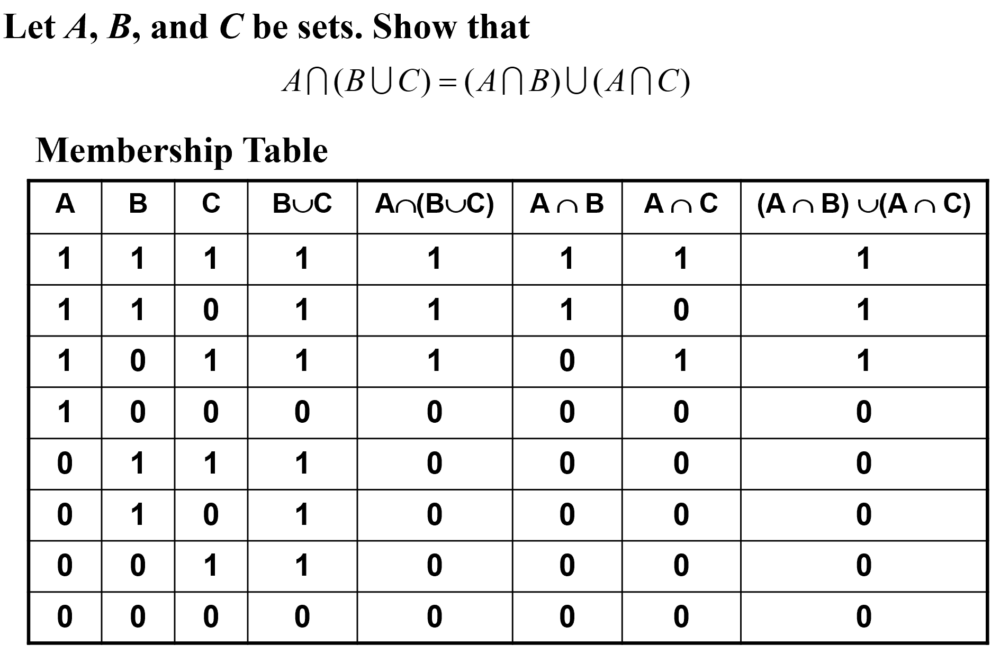

Part 01 Set
Covering2.1 ~ 2.2
Set 集合
Basic 基本属性
Definition 定义
A set is an unordered collection of objects.
集合是对象的一个无序聚集。
Note:
- The Order of elements does not matter {1, 2, 3} = {3, 2, 1}
- Repetition of elements does not matter {1, 1, 2, 3, 3} = {1, 2, 3}
The objects in a set are called the elements（元素）, or members（成员）, of the set.
A set is said to contain（包含） its elements.
Note:
Uppercase letters are usually used to denote sets, and lowercase letters are usually used to denote elements of sets.
a ∈ A: a is a member (an element) of the set A
a ∉ A: a is not an element of the set A
Description 描述方法
Roster Method 花名册法
listing all its members between braces
e.g. S = {a, b, c, d}
Brace Notation with Ellipses 省略号记法
Sometimes the roster method is used to describe a set without listing all its members. Some members of the set are listed, and then ellipses (. . .) are used when the general pattern of the elements is obvious.
e.g. The set S of positive integers less than 100 can be denoted by S = {1, 2, 3, . . . , 99 }
Set Builder 构造器
We characterize all those elements in the set by stating the property or properties they must have to be members.
e.g. {x | x is an odd positive integer less than 10}
Truth Sets 真值集
Given a predicate P, and a domain D, we define the truth set of P to be the set of elements x in D for which P(x) is true.
The truth set of P(x) is denoted by {x ∈ D | P(x)}.
Venn Diagrams 文氏图

- In Venn diagrams, the universal set U is represented by a rectangle.
- Inside this rectangle, circles or other geometrical figures are used to represent sets.
- Points are used to represent the particular elements of the set.
Property 性质
The Relations Between Two Sets 集合间的关系
Subset 子集
$A\subseteq B\Leftrightarrow\forall x\in A\to x\in B)$
For any set A
$\phi\subseteq A$
$A\subseteq A$
Equal 相等
$\begin{aligned}&A=B\\Leftrightarrow&\forall x[(x\in A\to x\in B)\wedge(x\in B\to x\in A)]\\Leftrightarrow&(A\subseteq B)\wedge(B\subseteq A)\end{aligned}$
To show that two sets A and B are equal, show that A ⊆ B and B ⊆ A.
Proper subset 真子集
$\begin{aligned}&A\subset B\\Leftrightarrow&\forall x(x\in A\to x\in B)\wedge\exists x(x\in B\wedge x\notin A)\\Leftrightarrow&(A\subseteq B)\wedge(A\ne B)\end{aligned}$
The Size of a Set 集合的大小
Let S be a set. If there are exactly n distinct elements in S where n is a nonnegative integer, we say that S is a finite（有限的） set and that n is the cardinality（基数） of S.
Notation: |S| -> the cardinality of S
e.g. Let A be the set of odd positive integers less than 10. Then |A| = 5.
|∅| = 0
A set is said to be infinite（无限的） if it is not finite
e.g. The set of positive integers is infinite
Power Set 幂集
Given a set S, the power set of S is the set of all subsets of the set S.
Notation: P(S) -> the power set of S
Note:
- |S|=n implies |P(S)| = $2^n$
- S is finite and so is P(S)
- $x\in P(S)\Rightarrow x\in S（此处x是一个集合）\x\in S\Rightarrow{x}\in P(S)（此处x是一个元素）\S\in P(S)$
e.g.
What is the power set of the empty set? What is the power set of the set {∅}?
The empty set has exactly one subset, namely, itself. Consequently, P(∅) = {∅}. The set {∅} has exactly two subsets, namely, ∅ and the set {∅} itself. Therefore, P({∅}) = {∅, {∅} }.
A good way to check is to make sure |P(S)| = $2^n$
Cartesian Products 笛卡尔积
Tuple 元组
The ordered n-tuple（有序n元组） (a1, a2, . . . , an) is the ordered collection that has a1 as its first element, a2 as its second element, . . . , and an as its n-th element.
In particular, ordered 2-tuples are called ordered pairs（序偶）
$(x,y)=(u,v)\Rightarrow(x=u)\wedge(y=u)$
If $x\ne y$, then $(x,y)\ne(y,x)$
The Cartesian product of A and B, denoted by A × B, is the set of all ordered pairs (a, b), where a ∈ A and b ∈ B.
$A\times B = {(a, b) | a\in A\wedge b\in B}$
$A_1\times A_2\times· · ·\times A_n = {(a_1, a_2, . . . , a_n) | a_i\in A_i\ for\ i = 1, 2, . . . , n}$
Note:
If |A|=m, |B|=n, then |A×B|=|B×A|=mn
A×B≠B×A
A×∅ = ∅×A = ∅
Set Operations 集合运算
Intersection 交集
$A\cap B={x|x\in A\wedge x\in B}$
Two sets are called disjoint if their intersection is the empty set, namely $A\cap B = \empty$
Generalized Intersections 拓展的交集
$A1\cap A_2\cap...\cap A_n=\bigcap{i=1}^{n}A_i$
Union 并集
$A\cup B={x|x\in A\vee x\in B}$

The cardinality of the union of two finite sets:
$|A\cup B|=|A|+|B|-|A\cap B|$
Generalized Unions 拓展的并集
$A1\cup A_2\cup...\cup A_n=\bigcup{i=1}^{n}A_i$
Difference 差集
$A-B={x|x\in A\wedge x\notin B}$

Complement 补集
$\overline{A} = {x\in U | x\notin A}$
(U is the universal set)

Note:
$A-B=A\cap\overline{B}$
Symmetric Difference 对称差分
$A\oplus B=(A\cup B)-(A\cap B)$
Set Identities 集合恒等式
| Identity 恒等式 | Name 名称 |
|---|---|
| $A\cap U = A\A\cup\empty =A$ | Identity laws 恒等率 |
| $A\cup U = U\A\cap\empty=\empty$ | Domination laws 支配率 |
| $A\cup A = A\A\cap A = A$ | Idempotent laws 幂等律 |
| $\overline{\overline{A} }=A$ | Complementation law 补率 |
| $A\cup B = B\cup A\A\cap B = B\cap A$ | Commutative laws 交换律 |
| $A\cup (B\cup C) = (A\cup B)\cup C\A\cap (B\cap C) = (A\cap B)\cap C$ | Associative laws 结合律 |
| $A\cup (B\cap C) = (A\cup B)\cap(A\cup C)\A\cap (B\cup C) = (A\cap B)\cup(A\cap C)$ | Distributive laws 分配律 |
| $\overline{A\cap B} = \overline{A} ∪ \overline{B}\\overline{A\cup B} = \overline{A}\cap \overline{B}$ | De Morgan’s laws 德·摩根率 |
| $A\cup (A\cap B) = A\A\cap (A\cup B) = A$ | Absorption laws 吸收率 |
| $A\cup \overline{A} = U\A\cap\overline{A} = \empty$ | Complement laws 互补率 |
Ways to Prove Set Identities 集合恒等式的证明方法
I. Show that A ⊆ B and that B ⊆ A
New and important

II. Use logical equivalences to prove equivalent set definitions
Easy but tedious

III. Use a membership table
Like truth tables

IV. Use previously proven identities
Like ≡

Computer Representation of Set 集合的计算机表示
Using bit strings to represent sets
- Specify an arbitrary ordering of the elements of U, for instance $a_1,a_2,...,a_n$
- Represent a subset A of U with the bit string of length n, where the i-th bit is 1 if $a_i$ belongs to A and is 0 if $a_i$ does not belong to A.
- Thus, Union -> bitwise OR Intersection -> bitwise AND
Example:
Let U ={1, 2, 3, 4, 5,6,7,8,9}, A={1, 2, 3, 4, 5}, B= (1, 3, 5, 7, 9).
The bit string for the set A: 11 1110 000
The bit string for the set B: 10 1010 101